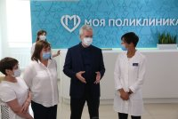
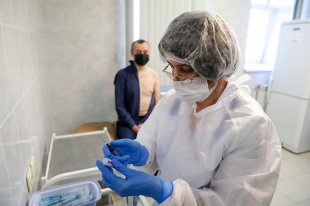

Вирусолог назвал ношение маски вопросом жизни и смерти
Не отказываться от ношения маски в общественном транспорте, а также в других местах массового скопления людей призвал вирусолог, доктор медицинских наук, член-корреспондент РАН Александр Лукашев.За отказом надеть маску может стоять чья-то смерть, заявил он в интервью телеканалу 'Россия 24'.


'Сейчас в Москве в транспорте масок стало больше, чем было.Прогресс есть, но, на мой взгляд, недостаточный, и многие люди этим не пользуются, при этом альтернативой является либо потеря работы для себя, если мы всё-таки уйдем на какую-то изоляцию вынужденную, либо это гибель кого-то близкого родственника, неблизкого родственника… В любом случае за отказом надеть маску может стоять чья-то смерть, чужая', - заявил Александр Лукашев.
Он подчеркнул, что сейчас в буквальном смысле от каждого зависит, будут ли вновь введены какие-то жесткие ограничения.'Потому таких вещей, как массовые мероприятия стоит избегать однозначно.Я понимаю, что хочется после лета потусоваться, но нужно понимать, что, придя на тусовку, ты можешь стать причиной гибели своего родственника', - сказал он, напомнив, что в группе риска находятся люди старшего возраста.
Александр Лукашев также пояснил, высокую степень заболеваемости COVID-19 в странах, которые относительно благополучно вышли из первой волны.
'Ограничения хороши, когда понятно, для чего они делаются и как из них выходить.Скажем весной, ограничения позволили и подготовить систему здравоохранения и отработать протоколы лечения.Сейчас эти проблемы сняты.Вот те страны, которые ввели очень жесткие ограничения, хорошо справились с первой волной, например, Израиль, Испания, сейчас имеют высокую вторую волну, потому что у них не образовалось никакой иммунной прослойки', - уточнил вирусолог.
По его словам, ситуация в России во многом отличается от ситуации в любой другой стране мира.'Мы из первой волны все еще не вышли.У нас заболеваемость продолжается, у нас она в ноль не падала', - отметил он.
Posted On: 2020-09-24T18:39:00
Posted By: Светлана Ментюкова
Content Date: 2020-09-24
Download Date: 2021-04-21
Document ID: L0C04AO4M